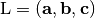

Variables¶
Variables frequently used in C-API are explained. In interfaces of
other languages, the definition may be different, e.g., lattice
for Python interface is transposed.
lattice¶
Attention: In Python interface, lattice is transposed
(Crystal structure (cell).)
Basis vectors (in Cartesian)
[ [ a_x, b_x, c_x ],
[ a_y, b_y, c_y ],
[ a_z, b_z, c_z ] ]
Cartesian position is obtained by

where is the basis vectors defined above and is
, and
 is the atomic position in fractional
coordinates given below.
is the atomic position in fractional
coordinates given below.
position¶
Atomic points (in fractional coordinates with respect to basis vectors)
[ [ x1_a, x1_b, x1_c ],
[ x2_a, x2_b, x2_c ],
[ x3_a, x3_b, x3_c ],
... ]
types¶
Atomic species are differenciated by integers. The nubmers are just used to distinguishes atoms, and is not releated to atomic numbers.
[ type_1, type_2, type_3, ... ]
The number of elements is same as the number of atoms.
rotation¶
Rotation matricies (ingeger) of symmetry operations.
[ [ r_aa, r_ab, r_ac ],
[ r_ba, r_bb, r_bc ],
[ r_ca, r_cb, r_cc ] ]
translation¶
Translation vectors corresponding to symmetry operations in fractional coordinates.
[ t_a, t_b, t_c ]
symprec¶
Tolerance of distance between atomic positions and between lengths of
lattice vectors to be tolerated in the symmetry finding. The angle
distortion between lattice vectors is converted to a length and
compared with this distance tolerance. If the explicit angle tolerance
is expected, see angle_tolerance.
angle_tolerance¶
Experimental
Tolerance of angle between lattice vectors in degrees to be tolerated in the symmetry finding. To use angle tolerance, another set of functions are prepared as follows
spgat_get_dataset
spgat_get_symmetry
spgat_get_symmetry_with_collinear_spin
spgat_get_multiplicity
spgat_find_primitive
spgat_get_international
spgat_get_schoenflies
spgat_refine_cell
These functions are called by the same way with an additional argument
of ‘const double angle_tolerance’ in degrees. By specifying a negative
value, the behavior becomes the same as usual functions. The default
value of angle_tolerance is a negative value.